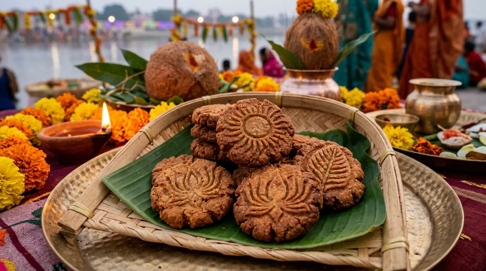

☘
नहाय–खाय
स्नान, घर की स्वच्छता और सात्त्विक भोजन के साथ व्रत की शुरुआत।
लोक आस्था का महापर्व
डूबते और उगते सूर्य को नमन।
परंपरा, प्रकृति और पवित्रता को समर्पित एक डिजिटल घाट।
ध्वनि आपकी अनुमति से शुरू होगी • सबसे अच्छा अनुभव हेडफ़ोन के साथ
AUSPICIOUS TIMINGS & DEVOTION
छठ महापर्व के शुभ समय, पवित्र नियम और डिजिटल अर्पण।
अस्ताचलगामी सूर्य को नमन। गोधूलि वेला में परिवार सहित घाट पर प्रथम अर्घ्य अर्पण।
उदीयमान भगवान भास्कर को द्वितीय अर्घ्य। आरोग्य, तेज और संतान सुख की मंगलकामना।
36 घंटे के निर्जला उपवास की पूर्णता। अदरक-गुड़, ठेकुआ और सात्त्विक भोजन से पारण।
गाना बजने के दौरान भी किसी भी ध्वनि पर क्लिक करें—घाट जैसा जीवंत माहौल गूंज उठेगा!
यहाँ अपना कोई भी संदेश लिखें या त्वरित संदेश चुनें—चाइम के साथ घाट के लाउडस्पीकर पर शुद्ध हिंदी में गूँज उठेगा!
A CELEBRATION OF FAITH
घाट की जीवंत छवियों में देखें आस्था के छह पावन रंग। किसी भी दृश्य पर क्लिक करके ऊपर का घाट भी बदलें।
THE SACRED JOURNEY
शुद्धता से सूर्य-अर्चना तक—चार दिनों की एक अनुशासित, सुंदर परंपरा।
स्नान, घर की स्वच्छता और सात्त्विक भोजन के साथ व्रत की शुरुआत।
दिनभर उपवास के बाद संध्या में प्रसाद; फिर कठिन निर्जला व्रत आरंभ होता है।
परिवार के संग घाट पर अस्त होते सूर्य को जल और अर्घ्य अर्पित करना।
उगते सूर्य की उपासना, आशीर्वाद और पारण के साथ पर्व का समापन।
SACRED ROOTS & WISDOM
रामायण व महाभारत काल से लेकर आधुनिक विज्ञान तक—महापर्व के चार पावन रहस्य।
THE SACRED OFFERINGS
प्रसाद में परंपरा, प्रकृति और स्वास्थ्य का अनूठा संगम है। किसी भी विकल्प पर क्लिक करके जानें।

गुड़, गेहूँ के दरदरे आटे और शुद्ध देसी घी से बना छठ का अनिवार्य महाप्रसाद, जिसे नए मिट्टी के चूल्हे पर आम की लकड़ी की आंच में तला जाता है।
छठ का सबसे पावन और अनिवार्य भोग—बिना ठेकुआ के सूर्य अर्घ्य पूर्ण नहीं माना जाता।
MELODIES OF DEVOTION
22 पारंपरिक छठ गीत · आधिकारिक YouTube recordings के ज़रिए
गीतों के अधिकार संबंधित कलाकारों और music labels के पास हैं। Playback आधिकारिक YouTube player से होता है; embedded availability बदल सकती है।
“आदित्य देव को प्रणाम, छठी मैया का आशीर्वाद सबके जीवन में उजाला लाए।”
॥ जय छठी मैया ॥“हे भगवान सूर्य व षष्ठी देवी, हम आपके पावन महापर्व पर प्रकृति, पवित्रता, स्वच्छता और परिवार के कल्याण का पावन संकल्प लेते हैं।”